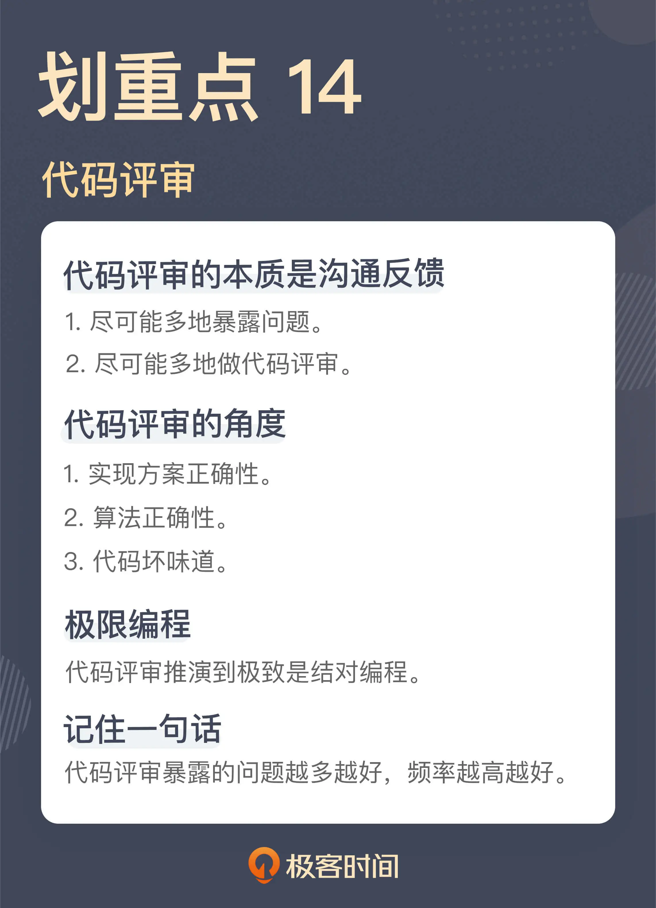

- 00 开篇词 这一次，我们从“丑”代码出发.md.html
- 01 缺乏业务含义的命名：如何精准命名？.md.html
- 02 乱用英语：站在中国人的视角来看英文命名.md.html
- 03 重复代码：简单需求到处修改，怎么办？.md.html
- 04 长函数：为什么你总是不可避免地写出长函数？.md.html
- 05 大类：如何避免写出难以理解的大类？.md.html
- 06 长参数列表：如何处理不同类型的长参数？.md.html
- 07 滥用控制语句：出现控制结构，多半是错误的提示.md.html
- 08 缺乏封装：如何应对火车代码和基本类型偏执问题？.md.html
- 09 可变的数据：不要让你的代码“失控”.md.html
- 10 变量声明与赋值分离：普通的变量声明，怎么也有坏味道？.md.html
- 11 依赖混乱：你可能还没发现问题，代码就已经无法挽救了.md.html
- 12 不一致的代码：为什么你的代码总被吐槽难懂？.md.html
- 13 落后的代码风格：使用“新”的语言特性和程序库升级你的代码.md.html
- 14 多久进行一次代码评审最合适？.md.html
- 15 新需求破坏了代码，怎么办？.md.html
- 16 熊节：什么代码应该被重构？.md.html
- 17 课前作业点评：发现“你”代码里的坏味道.md.html
- 结束语 写代码是一件可以一生精进的事.md.html
- 捐赠
14 多久进行一次代码评审最合适？
你好，我是郑晔。
前面我们讲了很多代码的坏味道，我们的关注点都在代码本身上。知道了什么样的代码是坏味道，有了具体的评判标准。那么，该如何去运用坏味道这把“尺子”呢？
有一个发现坏味道的实践，就是代码评审，也就是很多人熟悉的 Code Review，Wikipedia 上定义是这样的：
代码评审，是指对计算机源代码系统化地审查，常用软件同行评审的方式进行，其目的是在找出及修正在软件开发初期未发现的错误，提升软件质量及开发者的技术。
大多数程序员都经历过代码评审，也都能够初步理解代码评审本身存在的价值，这也是差不多全行业都认为有价值的一个实践。只不过，每个团队在代码评审的实践差别还挺大的，有的团队是在一个完整的开发周期结束之后，做一次代码评审；有的是安排每周的代码评审；有的则是每天都要做代码评审。之所以会有这样的差异，主要就是团队对于代码评审本身的理解有差异。
所以，这一讲我们就来谈谈，到底应该如何理解代码评审。
代码评审是一个沟通反馈的过程
关于代码评审，第一个问题就是，为什么要做代码评审？
这个问题其实比较简单，没有人能够保证自己写出来的代码是没有问题的，而规避个体问题的主要方式就是使用集体智慧，也就是团队的力量。
这个答案是从个体的角度在看问题，其实，看待代码评审还有一个团队视角，代码评审的过程，也是一个知识分享的过程，保证一些细节的知识不再是隐藏在某一个人的头脑中，而是放置到了团队的层面。
不过，无论是从哪个角度看代码评审，它的本质，就是沟通反馈的过程。我把我对这段代码的理解分享给你，你把你对这段代码的想法共享给我。有人给出代码实现的知识，有人贡献出对技术的理解。
如果我们理解了代码评审是一个沟通反馈的过程，那就可以把沟通反馈的一些原则运用到代码评审中。
我在《[10x 程序员工作法]》里，花了一个模块的篇幅讲了沟通反馈，我们希望沟通要尽可能透明，尽可能及时。把这样的理解放到代码评审中，就是要尽可能多暴露问题，尽可能多做代码评审。
暴露问题
我们先来说暴露问题。代码评审就是一个发现问题的过程，这是一个大家都能理解的事情。但问题就在于，要发现什么问题？
如果泛泛地回答，那自然就是代码实现中的各种问题。然而，这个答案还可以细化一下，做代码评审时，我们可以从下面几个角度来看代码：
我们一个一个来看，先来说实现方案。理论上说，实现方案应该是设计评审中关注的内容，但在实际工作中，并不是所有团队都能够很好地执行设计评审，而且设计评审有时也关注不到特别细的点，所以，一些实现方案的问题只有在代码评审中才能发现。
在一次代码评审中，我看到一个批量处理的 REST 接口，接到请求经过一些处理之后，它会调用另外一个服务，因为这个服务只支持单一的请求，所以，REST 接口只能一个一个地向这个服务发送请求。
如果一切正常的话，这个接口是没有问题的。但是，如果在处理过程中出现失败，没有把所有的请求发给另一个服务，这个接口的行为是什么样呢？是需要客户端重新发起请求，还是服务端本身重新调用接口？如果是服务端负责重试，那么，这个方案本身没有任何重试的机制，也就是说，一个请求一旦出错，它就丢了，业务不能顺利地完成。
当我把这个问题抛了出来时，同事一下子愣住了。显然，他只考虑了正常的情况，而没有考虑出现失败的情况。把它做成一个完整的方案，很可能还需要做一个后台服务，负责替未能得到有效处理的任务善后，显然，这就不是代码调整，而是整个方案的调整。
这是很多程序员，尤其是经验比较少的程序员写程序经常会出现的问题：正常情况一切顺利，异常情况却考虑不足。
我们再来说说算法正确性。
别看整个行业都十分重视算法，但那是在面试的过程中。真正到了实际工作里，算法复杂度常常被人忽略。
我们之前讲过嵌套的代码，对于循环语句，我们要把处理一个元素的代码提取出来。不过，这有时候也会带来一些意想不到的问题。
有一次代码评审，我看到了一段写得很干净的代码，就是把循环里对于一个元素的处理拆了出去。还没等我来赞美这段代码写得好，我就看到了单个元素处理的代码，每次都要查询一次数据库，找出相应的元素，做修改之后再存回去。
就这样，单独看每段代码都是对的，但合在一起就出了问题，本来可以通过一次查询解决的问题变成了 N 次查询。
我再给你讲一个让我印象深刻的故事。在我职业生涯的初期，我做过一段时间图像识别的工作。有一次，一个实习生说自己的代码太慢了，让我帮忙看看。
从表面上看，代码写得还不错，不是一眼能够看出问题。仔细看了半天，我在一个遍历图像像素点的循环里发现了一个图像复制的代码，也就是说，每循环一次，都要把整个图像复制一遍，代码慢就在所难免了。
我相信，如果这是一个算法练习，这两个同事都能够有效地解决这个问题，但放在工程里，就难免挂一漏万了。所以，算法正确性也是我们要在代码评审中关注的。
无论是实现方案的正确性，还是算法的正确性，对于大多数团队来说，都会关注到。但代码坏味道却是很多团队容易忽略的，这里面的关键点就是很多团队对于坏味道的标准太低了。
在这个专栏里，我讲了很多坏味道，有一些是你早就认同的，有一些则在挑战你的认知。也正是因为有这些挑战你认知的部分，所以很多代码即便经过评审，也依然会产生很多问题。关于坏味道，我们整个专栏都在说，更多的细节我就不在这里讨论了。
及时评审
说完代码评审中要暴露的问题，我们再来说说代码评审的另外一个方面，代码评审的频率。
不同的团队代码评审，频率是不一样的，最糟糕的肯定是不评审，整个团队闭着眼睛向前冲，这就不是我们关心的范畴。常见的评审频率是每个迭代评审一次，也有每周评审的。
我对评审的建议是，提升评审的频率，比如，每天评审一次。
评审周期过长是有问题的，周期过长，累积的问题就会增多，造成的结果就是太多问题让人产生无力感。如果遇到实现方案存在问题，要改动的代码就太多了，甚至会影响到项目的发布。
而提升评审的频率，评审的周期就会缩短，每个周期内写出来的代码就是有限的，人是有心力去修改的。学过我任何一个专栏的同学都知道，我在专栏中反复强调短小的价值，只有及时的沟通反馈，才有可能实现这一原则。
你或许会好奇，我们是不是可以再进一步提升评审的频率呢？
肯定可以，如果把代码评审推至极致，就是有个人随时随地来做代码评审。我在《[10x 程序员工作法]》讲过极限编程的理念，就是把好的实现推向极致，而代码评审的极致实践就是结对编程。
结对编程就是两个人一起写一段代码，一个人主要负责写，一个人则站在用外部视角保证这段代码的正确性。好的结对编程对两个人的精力集中度要求是很高的，两个人一起写一天代码其实是很累的一件事，不过，也正是因为代码是两个人一起写，代码质量会提高很多。
从我之前经历的一些团队实践来看，结对编程还有一个额外的好处，就是对于团队中的新人提升极大，这就是拜结对编程这种高强度的训练和反馈所赐。高强度的训练和反馈，本质上就是一种刻意练习，而刻意练习是一个人提升最有效的方式。
我知道，对于大多数团队来说，是没有条件做大规模的结对编程的。但对个体来说，创造一些机会与高手一起写代码也是很好的。即便不能一起写，去观摩高手写代码也能学到很多东西。再退一步，实在身边没有机会，去网上看看高手写代码也是一种学习方式。
总结时刻
今天的加餐我们讨论了代码评审。对于很多人来说，代码评审只是一个发现问题的过程，而通过今天的讨论，我们知道了代码评审是一个沟通反馈的过程。站在沟通反馈的角度，我们关注的是，尽可能多地暴露问题，尽可能多地做代码评审。
代码评审可以从实现方案正确性、算法正确性和代码坏味道的角度去发现问题。代码评审的频率是越高越好，频率越高，发现和解决问题的难度越低，团队越容易坚持下去。
如果把代码评审推向极致就是随时随地做代码评审，这个实践就是结对编程。
如果今天的内容你只能记住一件事，那请记住：代码评审暴露的问题越多越好，频率越高越好。

思考题
你在代码评审上有哪些经验，或者遇到过哪些让你印象深刻的问题代码，欢迎在留言区分享你的经验。如果你有所收获，也欢迎把这节课分享出去。
感谢阅读，我们下一讲再见！
© 2019 - 2023 Liangliang Lee. Powered by gin and hexo-theme-book.